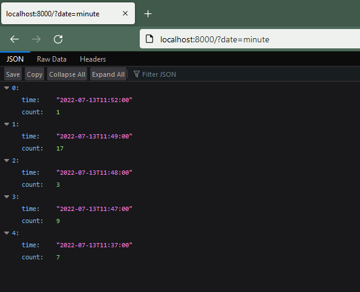
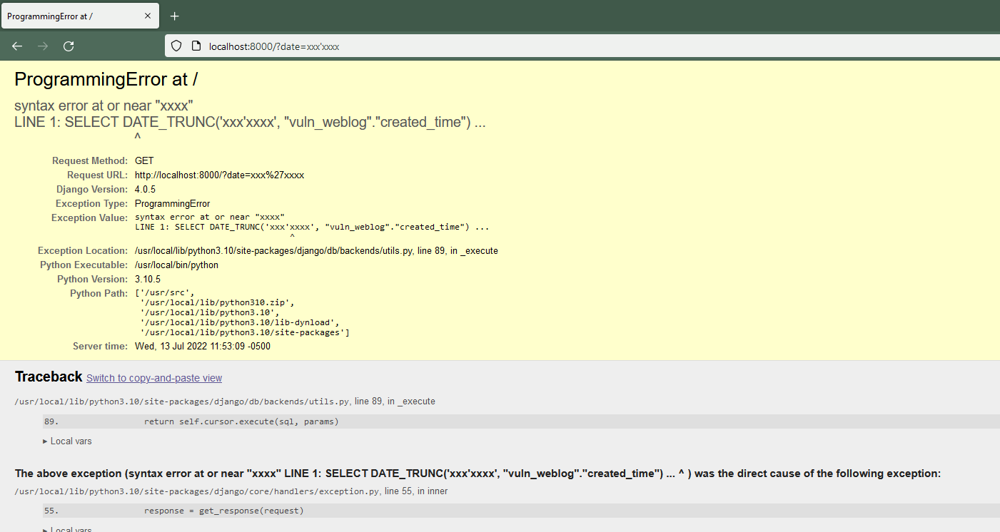

Django Trunc(kind) and Extract(lookup_name) SQL Injection (CVE-2022-34265)¶
Django is a high-level Python web framework that encourages rapid development and clean, pragmatic design.
Django released a security update on July 4, 2022, which fixes a SQL injection vulnerability in the Trunc() and Extract() database functions. This vulnerability affects Django versions before 4.0.6, 3.2.14.
References:
- https://www.djangoproject.com/weblog/2022/jul/04/security-releases/
- https://github.com/django/django/commit/0dc9c016fadb71a067e5a42be30164e3f96c0492
Environment Setup¶
Execute the following command to start a vulnerable Django 4.0.5 server:
docker compose up -d
After the server is started, you can access the web page at http://your-ip:8000.
Vulnerability Reproduction¶
The web application uses the Trunc function to aggregate page click counts by datetime. Visit http://your-ip:8000/?date=minute to see the number of clicks per minute:

To exploit the SQL injection vulnerability, modify the date parameter with malicious input:
http://your-ip:8000/?date=xxxx'xxxx
The SQL error message will be displayed, confirming the successful injection:
